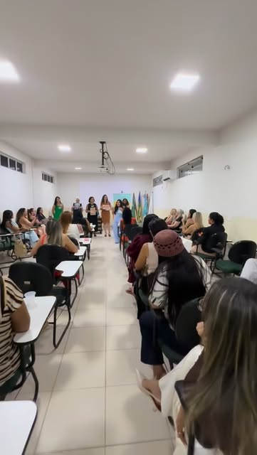
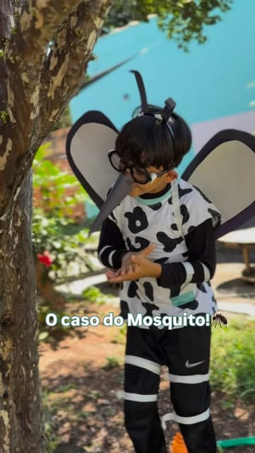
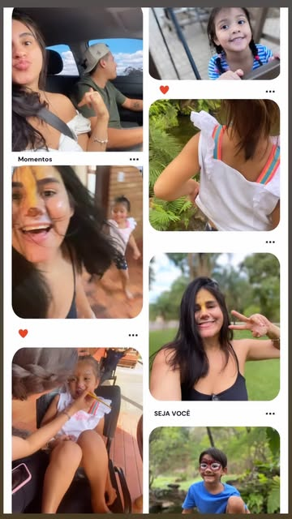
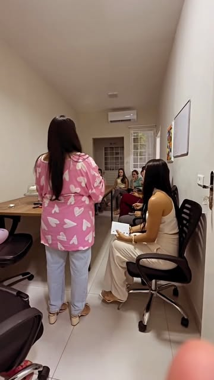
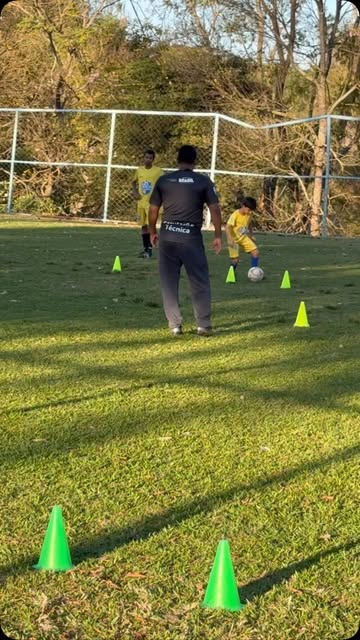
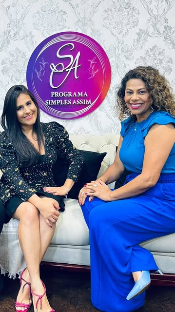

Avaliação Psicológica humanizada
Uma investigação cuidadosa das habilidades cognitivas, emocionais e comportamentais, conduzida com acolhimento — sem pressa e sem rótulos. Um laudo que vira mapa, não sentença.
Para cada mente,
um caminho próprio.
Avaliação psicológica humanizada e atendimento especializado em TEA — com escuta, ciência e muita criatividade.
Seu filho não é responsável pela sua raiva, nem pelo seu cansaço. Ele é criança, e você é adulto.
Quem precisa respirar fundo antes de agir é você.
Há mais de oito anos traduzindo o que cada criança, adolescente e família está sentindo — com leveza, ludicidade e profundidade.
No consultório, nas escolas, em palestras ou ao ar livre, o cuidado psicológico pode — e deve — ser humano. Uso brincadeiras, histórias, fantoches e a própria natureza como pontes para chegar onde as palavras ainda não chegam.
Atendo online e presencialmente em Caldas Novas. E acredito no poder do ambiente: quando ele muda, o comportamento muda junto.
Cada atendimento nasce de uma escuta atenta. Conheça como posso caminhar com você e com a sua família.
Uma investigação cuidadosa das habilidades cognitivas, emocionais e comportamentais, conduzida com acolhimento — sem pressa e sem rótulos. Um laudo que vira mapa, não sentença.
Intervenções que respeitam o tempo, a sensorialidade e a singularidade de cada criança autista — com a família como parte essencial do processo.
Ferramentas práticas para atravessar birras, crises e cansaço. Porque regular a criança começa pelo adulto que a acompanha.
Encontros para escolas, empresas e grupos de pais sobre desenvolvimento infantil, emoções e neurodiversidade — com conteúdo que se leva para casa.
Uma primeira conversa com a família para entender a história, as dúvidas e o que motivou a busca.
Sessões com instrumentos validados e muita brincadeira — porque a criança se mostra quando se sente segura.
Quando faz sentido, conversamos com escola e outros profissionais para enxergar a criança por inteiro.
Resultados explicados com clareza e carinho, acompanhados de um plano de ação possível para o dia a dia.
Recursos criativos, palestras, aventuras e momentos que viram aprendizado.






Levando a psicologia para além do consultório — com linguagem simples, afeto e informação de qualidade.
O primeiro passo pode ser só uma mensagem. Atendimento online e presencial em Caldas Novas.
Agende sua sessão